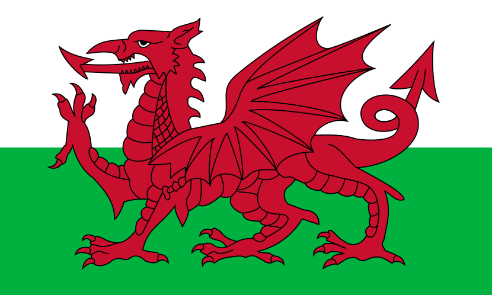

| Rok | 0-14 lat (mężczyźni): 0-14 lat | (kobiety): 0-14 lat | (%całości): 15-64 lat | (mężczyźni): 15-64 lat | (kobiety): 15-64 lat | (%całości): 65 lat lub więcej | (mężczyźni): 65 lat lub więcej | (kobiety): 65 lat i więcej | (%całości): |
|---|---|---|---|---|---|---|---|---|---|
| 2007 | 9 024 344 | 8 553 700 | 13,8 % | 41 841 760 | 41 253 968 | 65,2 % | 11 312 492 | 15 447 230 | 21 % |
| 2009 | 8 804 465 | 8 344 800 | 13,5 % | 41 187 425 | 40 533 876 | 64,3 % | 11 964 694 | 16 243 419 | 22,2 % |
| 2010 | 8 665 440 | 8 212 680 | 13,3 % | 40 969 829 | 40 291 648 | 64,1 % | 12 163 028 | 16 501 808 | 22,6 % |


| Jednostka | Rodzaj | Stolica | Język urzędowy |
|---|---|---|---|
|
Anglia |
królestwo | Londyn | angielski |
|
Szkocja |
królestwo | Edynburg | angielski, gaelicki szkocki |
|

Walia |
księstwo | Cardiff | angielski, walijski |
|
Irlandia Północna |
prowincja | Belfast | angielski, irlandzki |


| rok | liczba mieszkańców | komentarz |
|---|---|---|
| 59 p.n.e. | 25 000 | |
| 150 n.e. | 80 000 | najwięcej w okresie Cesarstwa rzymskiego |
| 510 | 30 000 | straty po najazdach w III i IV w. |
| 1000 | 20 000 | najniższy stan po najazdach wikingów |
| 1200 | 110 000 | rozwój w późnym Średniowieczu |
| 1328 | 250 000 | rozkwit w XIII i XIV w., złoty wiek za króla Ludwika |
| 1500 | 200 000 | straty po epidemii dżumy i wojnie stuletniej |
| 1550 | 275 000 | rozwój w okresie Renesansu |
| 1594 | 210 000 | straty po wojnach religijnych i domowych |
| 1634 | 420 000 | bardzo szybki rozwój za Henryka IV |
| 1700 | 515 000 | |
| 1750 | 565 000 | |
| 1789 | 630 000 | szczyt rozwoju w XVIII w. |
| 1801 | 548 000 | straty w czasie rewolucji francuskiej |
| 1835 | 1 000 000 | |
| 1860 | 2 000 000 | najszybszy w historii rozwój za cesarza Napoleona III i Haussmanna |
| 1885 | 3 000 000 | |
| 1905 | 4 000 000 | |
| 1911 | 4 500 000 | |
| 1921 | 4 850 000 | stagnacja na skutek strat po I wojnie światowej |
| 1931 | 5 600 000 | |
| 1936 | 6 000 000 | |
| 1946 | 5 850 000 | straty po II wojnie światowej |
| 1950 | 6 460 000 | |
| 1960 | 7 600 000 | |
| 1970 | 8 750 000 | koniec powojennego boomu urodzeń, koniec dodatniego salda migracji |
| 1982 | 9 500 000 | saldo migracyjne ujemne, wzrost liczby ludności trochę wolniejszy |
| 1990 | 10 291 851 | |
| 1999 | 11 174 743 | |
| 2017 | 12 628 266 |


| Total population of Thailand | 66.56 million (2019) |
|---|---|
| Age structure (2020 est.) | |
| 0-14 years (male 5,812,803 /female 5,533,772) | 16.45% |
| 15-24 years (male 4,581,622 /female 4,400,997) | 13.02% |
| 25-54 years (male 15,643,583 /female 15,875,353) | 45.69% |